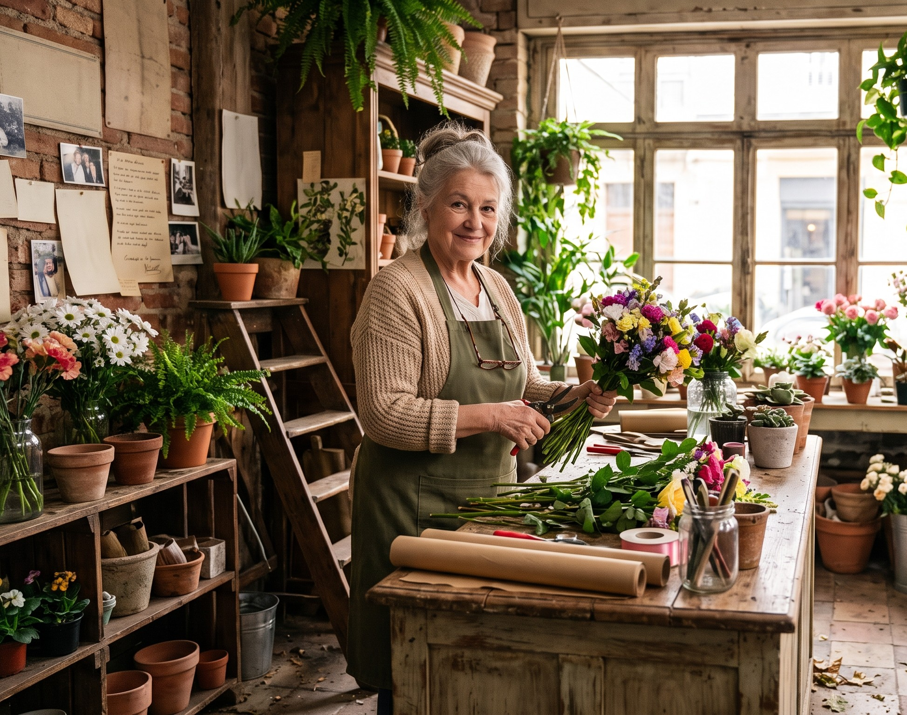

Sobre Lulú
Lucía Vargas. Actualmente tiene 38 años de edad. Desde pequeña le encanto la naturaleza y las flores. A la edad de 20 años decidio estudiar floristeria y comenzo sus estudios en bogota. Alli conocio mucha gente que le fue enseñando sobre el mundo de la floristeria perfeccionando su tecnica.
Lleva mas de 12 años trabajando en lo que mas le gusta, dedicandole su vida en tranformar diferentes espacios y los corazones de las personas.
"Mi mayor sueño es poder tener mi propio cultivo, en el cual puedan crecer mis plantas para despues compartirlas con el mundo".